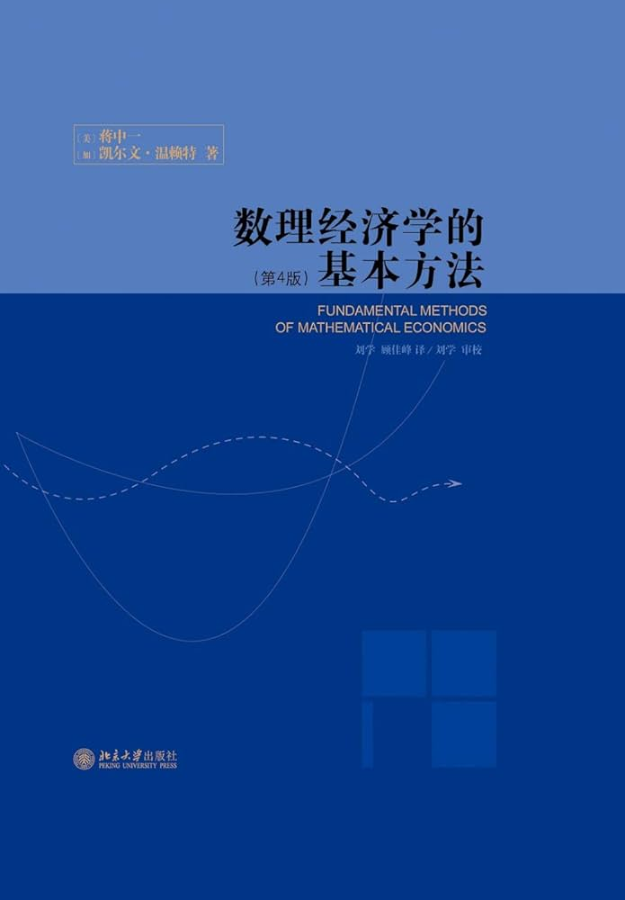

📖《数理经济学的基本方法》是蒋中一的经典教材，系统介绍经济学研究中常用的数学工具和方法，是经济学研究生的必修读物。
数学基础——线性代数、微积分、微分方程等数学基础知识。
优化理论——静态优化、动态优化、最优控制理论。
均衡分析——一般均衡、博弈论基础。
动态分析——差分方程、微分方程在经济学中的应用。
经济学研究生的必修课，也是跨入经济学研究的必经之路。书中系统讲解了优化理论、动态分析、均衡分析等核心方法，涵盖了学习经济学所需要的所有基础数学工具。
蒋中一教授的讲解风格很独特：他不是简单地罗列数学公式，而是始终告诉你这个工具在经济学中有什么用。拉格朗日乘数法不只是求极值的方法，更是理解消费者最优选择的关键；微分方程不只是数学技巧，更是分析经济动态演化的利器。这种理论与实践的结合，让抽象的数学工具变得具体可感。对于想要深入研究经济学的人来说，这是一本绕不开的基础读物。